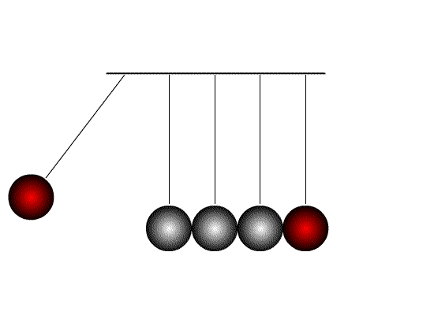
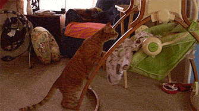

近日练拳有新的体验 ， 多谢袁老的指导 。 谈拳是件快乐的事 ， 特别是大家都好这一口的时候 。
关于三体式
两膝往里扣劲 , 不可显露 , 是肘与膝合也 ; 两足后根均向外扭劲 , 不可显露 , 是手与足合 。
这是摘自 《 孙禄堂武学录 》 的形意拳学总纲第三节 - 形意两仪学 。 本来一直不太明白两膝与两脚的方向相反 ， 如何才能做到啊 。 当袁老无意中讲了裹劲 ， 扣膝 ， 圆裆后我若有所悟 ， 问题应该在于圆裆时 。 现在站起来略有感觉 ， 希望方向没有错误 。
关于发劲
另外对于发劲 ， 就拿劈拳来说好了 ， 虽然姿势不一样 ， 但提到了力由脊发 。 这一句话经常在太极拳相关资料上看到 ， 形意拳倒是第一次听说 。 试了下 ， 也略有感觉 。 前阵子车式形意的传人表演的五行拳比较讲究束展 ， 从这个角度讲无非也是充分利用背脊这条大龙 。 形意太极内家拳原本相融 ， 应该错不了 。
以上两点是最近的新得 。 先存疑 ， 朝这方向练一段时间再做取舍 。
求师
原来的陈式太极师傅那边已不去学了 ， 我追求的东西他给不了我了 。 最近学拳如无妈的孩子 ， 没人疼 ， 呵呵 。 只能四处学习 ， 多看看书 。 如能遇明师是件幸福的事 ， 现今各行各业金钱味都重了点 ， 光重一点也算了 ， 就怕出了钱还学不到真东西 。
个性使然 ， 我学拳也喜欢辩证的去练 ， 然当师傅的可能希望弟子只跟他学一样的东西 ， 这都没有错 。 学拳真需缘分 ， 心胸宽广 ， 能容不同理念的老师是我理想的老师 。
最后放两张有意义的图
节节贯穿

发劲
